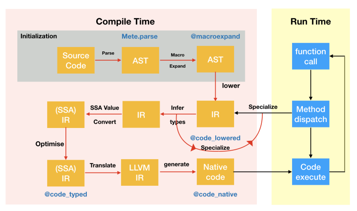
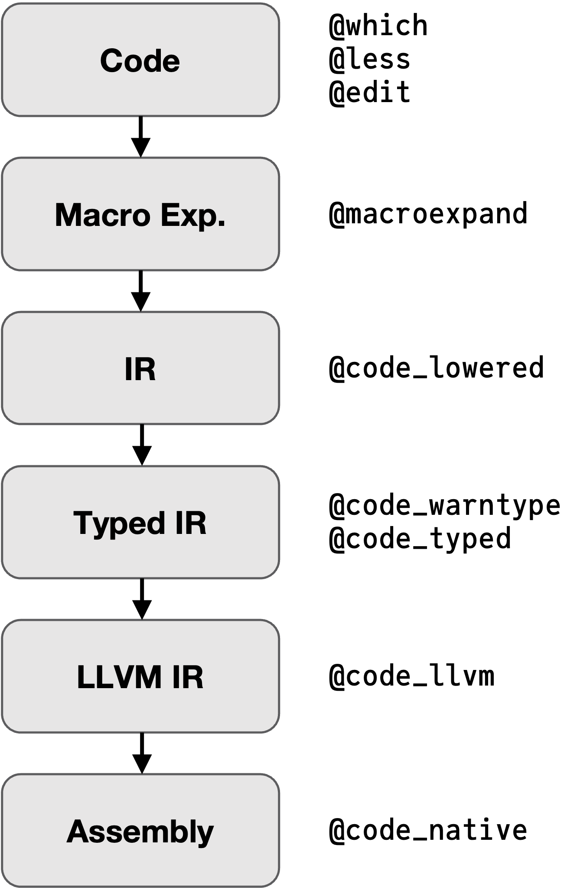

Code Specialization
Contents
Code Specialization#
To be fast, Julia needs to specialize code, that is compile specific native versions of the code. The better the specialization the faster the code! In the following we will investigate how Julia achieves good code specialization while retaining the power of generic programming.
Just Ahead of Time (JAOT) Compilation#

AST = Abstract Syntax Tree
IR = Intermediate Representation
SSA = Static Single Assignment
LLVM = Low Level Virtual Machine
Specialization#
Julia specializes on the types of function arguments, i.e. Julia compiles efficient machine code for the given input types, when a function is called for the first time.
If it is called again, the already existing machine code is reused, until we call the function with different input types.
func(x, y) = 2x + y
func (generic function with 1 method)
x = [1.2, 3.4, 5.6] # Vector{Float64}
y = [0.4, 0.7, 0.9] # Vector{Float64}
@time func(x, y);
@time func(x, y);
0.098205 seconds (405.27 k allocations: 20.623 MiB, 99.99% compilation time)
0.000004 seconds (2 allocations: 160 bytes)
First call: compilation + running the code
Second call: running the code
@time func(x, y);
0.000004 seconds (2 allocations: 160 bytes)
If one of the input types changes, Julia compiles a new specialization of the function!
typeof(x)
Vector{Float64} (alias for Array{Float64, 1})
x = [1, 3, 5]
3-element Vector{Int64}:
1
3
5
typeof(x)
Vector{Int64} (alias for Array{Int64, 1})
@time func(x, y); # Vector{Int64}, Vector{Float64}
@time func(x, y);
0.093486 seconds (345.65 k allocations: 17.312 MiB, 99.98% compilation time)
0.000004 seconds (2 allocations: 160 bytes)
We now have two efficient native codes in the cache: one for all Vector{Float64} inputs and another one for Vector{Int64} as the first and Vector{Float64} as the second argument type.
using MethodAnalysis
methods(func)
- func(x, y) in Main at In[1]:1
methodinstances(func)
2-element Vector{Core.MethodInstance}:
MethodInstance for func(::Vector{Float64}, ::Vector{Float64})
MethodInstance for func(::Vector{Int64}, ::Vector{Float64})
Introspection#
(But I really want to see what happens!)
We can inspect the code at all transformation stages with a bunch of macros:
Code Lowering#
Compiler optimisation is a very hard task, to make the compilers life easier it should be given ‘simple’ code.
In Julia ‘simple’ means static single-assignment form:
In compiler design, static single assignment form (often abbreviated as SSA form or simply SSA) is a property of an intermediate representation (IR) that requires each variable to be assigned exactly once and defined before it is used.
…
One can expect to find SSA in a compiler for Fortran, C or C++ …
This transformation from source code to SSA form is called lowering, and the SSA form is called lowered code.
function basic_condition(bool::Bool)
if bool
return 0
else
return 1
end
end
basic_condition (generic function with 1 method)
@code_lowered basic_condition(true)
CodeInfo(
1 ─ goto #3 if not bool
2 ─ return 0
3 ─ return 1
)
# Increase verbosity with `debuginfo=:source`
@code_lowered debuginfo=:source basic_condition(true)
CodeInfo(
@ In[11]:2 within `basic_condition`
1 ─ goto #3 if not bool
@ In[11]:3 within `basic_condition`
2 ─ return 0
@ In[11]:5 within `basic_condition`
3 ─ return 1
)
function basic_loop()
a = 0
for i in [1, 2, 3]
a += i
end
return a
end
basic_loop (generic function with 1 method)
@code_lowered debuginfo=:source basic_loop()
CodeInfo(
@ In[14]:2 within `basic_loop`
1 ─ a = 0
│ @ In[14]:3 within `basic_loop`
│ %2 = Base.vect(1, 2, 3)
│ @_2 = Base.iterate(%2)
│ %4 = @_2 === nothing
│ %5 = Base.not_int(%4)
└── goto #4 if not %5
2 ┄ %7 = @_2
│ i = Core.getfield(%7, 1)
│ %9 = Core.getfield(%7, 2)
│ @ In[14]:4 within `basic_loop`
│ a = a + i
│ @ In[14]:5 within `basic_loop`
│ @_2 = Base.iterate(%2, %9)
│ %12 = @_2 === nothing
│ %13 = Base.not_int(%12)
└── goto #4 if not %13
3 ─ goto #2
@ In[14]:6 within `basic_loop`
4 ┄ return a
)
#Nrefers to basic blocks of codeBlocks are shown on the left with
|characters outlining their span
%Nrefers to single static assignment (SSA) valuesrefer to single static assignment (SSA) values, when a previous SSA value is used, it’s referenced by anSSAValueand printed as%N@_Nrefers to temporary variables
function nextfib(n)
a, b = one(n), one(n)
while b < n
a, b = b, a + b
end
return b
end
nextfib (generic function with 1 method)
@code_lowered debuginfo=:source nextfib(1)
CodeInfo(
@ In[16]:2 within `nextfib`
1 ─ %1 = Main.one(n)
│ %2 = Main.one(n)
│ a = %1
└── b = %2
@ In[16]:3 within `nextfib`
2 ┄ %5 = b < n
└── goto #4 if not %5
@ In[16]:4 within `nextfib`
3 ─ %7 = b
│ %8 = a + b
│ a = %7
│ b = %8
│ @ In[16]:5 within `nextfib`
└── goto #2
@ In[16]:6 within `nextfib`
4 ─ return b
)
Type Inference#
The above lowered code now starts to get specialised: argument types and any explicit annotations are used to infer the types of all SSA variables (where/if possible), and that information is then used to specialise the function calls:
@code_typed debuginfo=:source nextfib(1.0)
CodeInfo(
1 ─ nothing::Nothing
@ In[16]:3 within `nextfib`
2 ┄ %2 = φ (#1 => 1.0, #3 => %6)::Float64
│ %3 = φ (#1 => 1.0, #3 => %2)::Float64
│ ┌ @ float.jl:412 within `<`
│ │ %4 = Base.lt_float(%2, n)::Bool
│ └
└── goto #4 if not %4
@ In[16]:4 within `nextfib`
┌ @ float.jl:383 within `+`
3 ─│ %6 = Base.add_float(%3, %2)::Float64
│ └
│ @ In[16]:5 within `nextfib`
└── goto #2
@ In[16]:6 within `nextfib`
4 ─ return %2
) => Float64
@code_typed debuginfo=:source nextfib(1)
CodeInfo(
1 ─ nothing::Nothing
@ In[16]:3 within `nextfib`
2 ┄ %2 = φ (#1 => 1, #3 => %6)::Int64
│ %3 = φ (#1 => 1, #3 => %2)::Int64
│ ┌ @ int.jl:83 within `<`
│ │ %4 = Base.slt_int(%2, n)::Bool
│ └
└── goto #4 if not %4
@ In[16]:4 within `nextfib`
┌ @ int.jl:87 within `+`
3 ─│ %6 = Base.add_int(%3, %2)::Int64
│ └
│ @ In[16]:5 within `nextfib`
└── goto #2
@ In[16]:6 within `nextfib`
4 ─ return %2
) => Int64
Note the specialisation on the types, instead of generic + and >, now specific add_float/add_int are used!
Whereas in Python:
In [1]: import dis
In [2]: def nextfib(n):
...: a, b = 1, 1
...: while b < n:
...: a, b = b, a + b
...: return b
...:
In [3]: dis.dis(nextfib)
2 0 LOAD_CONST 1 ((1, 1))
2 UNPACK_SEQUENCE 2
4 STORE_FAST 1 (a)
6 STORE_FAST 2 (b)
3 8 LOAD_FAST 2 (b)
10 LOAD_FAST 0 (n)
12 COMPARE_OP 0 (<)
14 POP_JUMP_IF_FALSE 19 (to 38)
4 >> 16 LOAD_FAST 2 (b)
18 LOAD_FAST 1 (a)
20 LOAD_FAST 2 (b)
22 BINARY_ADD
24 ROT_TWO
26 STORE_FAST 1 (a)
28 STORE_FAST 2 (b)
3 30 LOAD_FAST 2 (b)
32 LOAD_FAST 0 (n)
34 COMPARE_OP 0 (<)
36 POP_JUMP_IF_TRUE 8 (to 16)
5 >> 38 LOAD_FAST 2 (b)
40 RETURN_VALUE
In [4]: def add(a, b):
...: return a.__add__(b)
...:
In [5]: dis.dis(add)
2 0 LOAD_FAST 0 (a)
2 LOAD_METHOD 0 (__add__)
4 LOAD_FAST 1 (b)
6 CALL_METHOD 1
8 RETURN_VALUE
Types are not known, so the correct functions have to be found each time an operation is done.
Whereas Julia can compile the code once for given input types and then directly call the required function.
This crucial process is known as type inference and its success is the basis for a good specialization (i.e. performant native code as a result). It will concern us in much more detail tomorrow.
LLVM IR#
The next step is to go from lowered typed code to LLMV IR.
Julia uses the LLVM compiler framework, which is also used by Rust, Swift, Kotlin, and other languages.
‘IR’ means Intermediary Representation:
An intermediate representation (IR) is the data structure or code used internally by a compiler or virtual machine to represent source code. An IR is designed to be conducive to further processing, such as optimization and translation
@code_llvm basic_condition(true) # dump_module=true shows the 'full' ir
; @ In[11]:1 within `basic_condition`
define
i64 @julia_basic_condition_2456(i8 zeroext %0) #0 {
top:
; @ In[11]:2 within `basic_condition`
%1 = and i8 %0, 1
%2 = xor i8 %1, 1
%3 = zext i8 %2 to i64
; @ In[11] within `basic_condition`
ret i64 %3
}
@code_llvm nextfib(1)
; @ In[16]:1 within `nextfib`
define i64 @julia_nextfib_2479(i64 signext %0) #0 {
top:
br label %L2
L2: ; preds = %L2, %top
%value_phi = phi i64 [ 1, %top ], [ %1, %L2 ]
%value_phi1 = phi i64 [ 1, %top ], [ %value_phi, %L2 ]
; @ In[16]:3 within `nextfib`
; ┌ @ int.jl:83 within `<`
%.not = icmp slt i64 %value_phi, %0
; └
; @ In[16]:4 within `nextfib`
; ┌ @ int.jl:87 within `+`
%1 = add i64 %value_phi1, %value_phi
; └
; @ In[16]:3 within `nextfib`
br i1 %.not, label %L2, label %L8
L8: ; preds = %L2
; @ In[16]:6 within `nextfib`
ret i64 %value_phi
}
Native Code#
@code_native debuginfo=:source nextfib(1) # binary=true to see the raw binary code
.text
.file "nextfib"
.globl julia_nextfib_2495 # -- Begin function julia_nextfib_2495
.p2align 4, 0x90
.type julia_nextfib_2495,@function
julia_nextfib_2495: # @julia_nextfib_2495
; ┌ @ In[16]:1 within `nextfib`
.cfi_startproc
# %bb.0: # %top
movl $1, %ecx
movl $1, %eax
.p2align 4, 0x90
.LBB0_1: # %L2
# =>This Inner Loop Header: Depth=1
movq %rax, %rdx
movq %rcx, %rax
; │ @ In[16]:4 within `nextfib`
; │┌ @ int.jl:87 within `+`
addq %rcx, %rdx
movq %rdx, %rcx
; │└
; │ @ In[16]:3 within `nextfib`
; │┌ @ int.jl:83 within `<`
cmpq %rdi, %rax
; │└
jl .LBB0_1
# %bb.2: # %L8
; │ @ In[16]:6 within `nextfib`
retq
.Lfunc_end0:
.size julia_nextfib_2495, .Lfunc_end0-julia_nextfib_2495
.cfi_endproc
; └
# -- End function
.section ".note.GNU-stack","",@progbits
Let’s compare this to integer input.
@code_native debuginfo=:source nextfib(1.0)
.text
.file "nextfib"
.section .rodata.cst8,"aM",@progbits,8
.p2align 3 # -- Begin function julia_nextfib_2499
.LCPI0_0:
.quad 0x3ff0000000000000 # double 1
.text
.globl julia_nextfib_2499
.p2align 4, 0x90
.type julia_nextfib_2499,@function
julia_nextfib_2499: # @julia_nextfib_2499
; ┌ @ In[16]:1 within `nextfib`
.cfi_startproc
# %bb.0: # %top
movabsq $.LCPI0_0, %rax
vmovsd (%rax), %xmm1 # xmm1 = mem[0],zero
; │ @ In[16]:3 within `nextfib`
; │┌ @ float.jl:412 within `<`
vucomisd %xmm1, %xmm0
; │└
jbe .LBB0_3
# %bb.1: # %L6.preheader
vmovsd (%rax), %xmm2 # xmm2 = mem[0],zero
vmovapd %xmm2, %xmm3
.p2align 4, 0x90
.LBB0_2: # %L6
# =>This Inner Loop Header: Depth=1
; │ @ In[16]:4 within `nextfib`
; │┌ @ float.jl:383 within `+`
vaddsd %xmm2, %xmm3, %xmm1
; │└
; │ @ In[16]:3 within `nextfib`
; │┌ @ float.jl:412 within `<`
vucomisd %xmm1, %xmm0
vmovapd %xmm3, %xmm2
vmovapd %xmm1, %xmm3
; │└
ja .LBB0_2
.LBB0_3: # %L8
; │ @ In[16]:6 within `nextfib`
vmovapd %xmm1, %xmm0
retq
.Lfunc_end0:
.size julia_nextfib_2499, .Lfunc_end0-julia_nextfib_2499
.cfi_endproc
; └
# -- End function
.section ".note.GNU-stack","",@progbits
How Important is Specialization?#
Let’s try to estimate the performance gain by specialization, we can do this by breaking the compilation process by throwing away type information.
This way Julia will act, roughly, in the same way as Python: it has to work out what can be done to a variable every single time it encounters it. We can do this by storing the variables in a Vector{Any}.
First, let’s write the same nextfib function in Python and benchmark it:
In [1]: def nextfib(n):
...: a, b = 1, 1
...: while b < n:
...: a, b = b, a + b
...: return b
...:
In [2]: %timeit nextfib(100_000)
951 ns ± 7.39 ns per loop (mean ± std. dev. of 7 runs, 1,000,000 loops each)
using BenchmarkTools
using PythonCall
@pyexec """
global nextfib
def nextfib(n):
a, b = 1, 1
while b < n:
a, b = b, a + b
return b
"""
@benchmark @pyexec "nextfib(100_000)"
BenchmarkTools.Trial: 10000 samples with 10 evaluations.
Range (min … max): 1.815 μs … 4.459 μs ┊ GC (min … max): 0.00% … 0.00%
Time (median): 1.849 μs ┊ GC (median): 0.00%
Time (mean ± σ): 1.857 μs ± 60.097 ns ┊ GC (mean ± σ): 0.00% ± 0.00%
▂▆██▇▄▁ ▂
▄▇███████▅▄▄▃▃▆▇▇███▇▆▅▃▄▁▁▁▁▁▁▁▁▄▃▄▁▄▃▁▄▁▄▁▄▄▁▅▅▅▅▄▅▅▆▆▆▆ █
1.81 μs Histogram: log(frequency) by time 2.18 μs <
Memory estimate: 0 bytes, allocs estimate: 0.
Now, for reference, here is the standard implementation in Julia:
function nextfib(n)
a, b = one(n), one(n)
while b < n
a, b = b, a + b
end
return b
end
nextfib (generic function with 1 method)
@benchmark nextfib(100_000)
BenchmarkTools.Trial: 10000 samples with 1000 evaluations.
Range (min … max): 3.034 ns … 9.345 ns ┊ GC (min … max): 0.00% … 0.00%
Time (median): 3.037 ns ┊ GC (median): 0.00%
Time (mean ± σ): 3.045 ns ± 0.159 ns ┊ GC (mean ± σ): 0.00% ± 0.00%
█
▂▁▁▁▁▁▁▁▁▁▁▁▁▁▃▁▁▁▁▁▁▁▁▁▁▁▁▁█▁▁▁▁▁▁▁▁▁▁▁▁▁█▁▁▁▁▁▁▁▁▁▁▁▁▁▇ ▂
3.03 ns Histogram: frequency by time 3.04 ns <
Memory estimate: 0 bytes, allocs estimate: 0.
And the broken version, which:
Throws away type information by storing variables in a
Vector{Any}Force enables bounds-checks for situations where they could be optimised away (e.g. the 3-element vector)
Disables specialisation on the argument
n
function nextfib_bad(n)
vars::Vector{Any} = [1, 1, n]
while vars[2] < vars[3]
vars[1], vars[2] = vars[2], vars[1] + vars[2]
end
return vars[2]
end
nextfib_bad (generic function with 1 method)
@benchmark nextfib_bad(100_000)
BenchmarkTools.Trial: 10000 samples with 10 evaluations.
Range (min … max): 1.020 μs … 5.447 μs ┊ GC (min … max): 0.00% … 0.00%
Time (median): 1.096 μs ┊ GC (median): 0.00%
Time (mean ± σ): 1.154 μs ± 138.026 ns ┊ GC (mean ± σ): 0.00% ± 0.00%
▅▇█▇▅▄▃▁▁ ▅▇▆▆▅▅▄▃▂▃▂▁▁▁ ▁▂▂▁▁ ▂
███████████▇▆▆▅▆██████████████████████▇▆▇▆▇▇▆▅▅▄▄▅▂▂▅▄▄▄▄▄▅ █
1.02 μs Histogram: log(frequency) by time 1.64 μs <
Memory estimate: 368 bytes, allocs estimate: 15.
This is (on my computer) almost the same as the Python version!
# @code_typed nextfib_bad(100)
# @code_native nextfib_bad(100)
Types vs Values#
In high performance computing, compilation time (order of seconds or minutes) is typically neglectable compared to the actual time it takes to perform the computation (readily on the orders of hours/days/weeks). Therefore, we generally want to optimize for runtime efficiency even if this means that compilation time goes up by a reasonable amount.
Julia specializes on input types and not values!
Primarily it is type information that is used by the compiler to specialize code. (There are special techniques like, e.g., constant propagation and others that we are neglecting here.)
(Very) roughly speaking, the more information there is in type space (e.g. in type parameters) the higher the likelihood that the compiler produces fast and efficient code.
As before, here is a Python benchmark:
In [1]: import numpy as np
In [2]: A = np.random.rand(10, 10)
In [3]: B = np.random.rand(10, 10)
In [4]: %timeit A + B
507 ns ± 4.51 ns per loop (mean ± std. dev. of 7 runs, 1,000,000 loops each)
np = pyimport("numpy")
A = np.random.rand(10, 10)
B = np.random.rand(10, 10);
@btime $A + $B;
658.720 ns (1 allocation: 16 bytes)
A = rand(10, 10);
B = rand(10, 10);
@btime $A + $B;
155.413 ns (1 allocation: 896 bytes)
typeof(A)
Matrix{Float64} (alias for Array{Float64, 2})
size(A)
(10, 10)
size(typeof(A)) # the size of A isn't type information
MethodError: no method matching size(::Type{Matrix{Float64}})
Closest candidates are:
size(::Union{LinearAlgebra.Adjoint{T, var"#s886"}, LinearAlgebra.Transpose{T, var"#s886"}} where {T, var"#s886"<:(AbstractVector)}) at /usr/local/julia/share/julia/stdlib/v1.8/LinearAlgebra/src/adjtrans.jl:173
size(::Union{LinearAlgebra.Adjoint{T, var"#s886"}, LinearAlgebra.Transpose{T, var"#s886"}} where {T, var"#s886"<:(AbstractMatrix)}) at /usr/local/julia/share/julia/stdlib/v1.8/LinearAlgebra/src/adjtrans.jl:174
size(::Union{LinearAlgebra.QR, LinearAlgebra.QRCompactWY, LinearAlgebra.QRPivoted}) at /usr/local/julia/share/julia/stdlib/v1.8/LinearAlgebra/src/qr.jl:581
...
Stacktrace:
[1] top-level scope
@ In[35]:1
using StaticArrays
A = @SMatrix rand(10, 10);
B = @SMatrix rand(10, 10);
typeof(A)
SMatrix{10, 10, Float64, 100} (alias for SArray{Tuple{10, 10}, Float64, 2, 100})
size(typeof(A)) # the size of A is type information!
(10, 10)
@btime $A + $B;
21.080 ns (0 allocations: 0 bytes)
StaticArrays.jl
============================================
Benchmarks for 3×3 Float64 matrices
============================================
Matrix multiplication -> 5.9x speedup
Matrix multiplication (mutating) -> 1.8x speedup
Matrix addition -> 33.1x speedup
Matrix addition (mutating) -> 2.5x speedup
Matrix determinant -> 112.9x speedup
Matrix inverse -> 67.8x speedup
Matrix symmetric eigendecomposition -> 25.0x speedup
Matrix Cholesky decomposition -> 8.8x speedup
Matrix LU decomposition -> 6.1x speedup
Matrix QR decomposition -> 65.0x speedup
Why not always use static arrays then?!#
By putting more information in the type you are putting more stress on the compiler to optimize things.
Specifically, if static arrays are too big compile time can explode or the compiler might just give up and fall back to an inefficient default version.
Generally speaking, static arrays are only useful as small fixed-size arrays.
# # should take (much) longer to compile and the speedup should be gone as well
# # if it isn't, increase N a little bit
# N = 50
# M = rand(N,N);
# Mstatic = SMatrix{N,N}(M);
# @btime $Mstatic + $Mstatic;
# @btime $M + $M;
Dispatch and Specialization#
Having a reasonable amount of information encoded in the type domain isn’t only useful to help the compiler (specialization) but also for dispatching to the most specific (and therefore hopfully most performant) method of a function.
Types drive both specialization and multiple dispatch!
In this sense, multiple dispatch is essentially the first step of the specialization process where Julia chooses between different implementations.
Example: Determinant of a 2x2 matrix#
Let’s say your task would be to write a function computing the determinant of a 2x2 matrix. How would you implement it?
Probably you’d say, well I know the formula for computing the determinant of a 2x2 matrix! Let’s just implement it.
In Python:
In [1]: import numpy as np
In [2]: M = np.array([[1, 2], [3, 4]])
In [3]: def det_2x2(X):
...: return X[0, 0] * X[1, 1] - X[0, 1] * X[1, 0]
...:
In [4]: %timeit det_2x2(M)
502 ns ± 10.5 ns per loop (mean ± std. dev. of 7 runs, 1,000,000 loops each)
And for Julia:
det_2x2(X) = X[1, 1] * X[2, 2] - X[1, 2] * X[2, 1]
det_2x2 (generic function with 1 method)
M = [1 2; 3 4]
2×2 Matrix{Int64}:
1 2
3 4
det_2x2(M)
-2
@btime det_2x2(M);
17.429 ns (0 allocations: 0 bytes)
Let’s see how Julia’s built-in det function compares to our algorithm, first in Numpy:
In [6]: %timeit np.linalg.det(M)
4.75 µs ± 59.9 ns per loop (mean ± std. dev. of 7 runs, 100,000 loops each)
Almost 10x slower than the hand-written version! And for Julia:
using LinearAlgebra
det(M)
-2.0
@btime det(M);
335.937 ns (3 allocations: 192 bytes)
20x slower!
The reason isn’t just that the compiler doesn’t just know the size of the matrix from its type but also that the code it considers (selected by the dispatch mechanism) is too general to compete with our implementation in det_2x2.
Let’s now move the size information to the type domain and see how things change.
using StaticArrays
S = @SMatrix [1 2; 3 4]
2×2 SMatrix{2, 2, Int64, 4} with indices SOneTo(2)×SOneTo(2):
1 2
3 4
@btime det($S);
3.042 ns (0 allocations: 0 bytes)
Note that it is super faster because StaticArrays.jl provides a hand-coded version, similar to our det_2x2 above, which gets selected because of the size information in the type.
The (tiny) speed difference compared to our own det_2x2 is only due to bounds checking and matrix vs linear indexing.
det_2x2_optimized(X) = X[1] * X[4] - X[3] * X[2]
@btime det_2x2_optimized($M);
3.368 ns (0 allocations: 0 bytes)
Are Explicit Type Annotations Necessary?#
Fortan/C require them, are they required in Julia?
function my_function(x)
y = rand()
z = rand()
x + y + z
end
function my_function_typed(x::Int)::Float64
y::Float64 = rand()
z::Float64 = rand()
x + y + z
end
my_function_typed (generic function with 1 method)
Nope! Julia’s type inference is powerful. Specifying types is not necessary for best performance.
@btime my_function(10);
@btime my_function_typed(10);
6.311 ns (0 allocations: 0 bytes)
6.314 ns (0 allocations: 0 bytes)
Annotating types explicitly can serve a purpose.
Enforce conversions
Very rarely: help the compiler infer types in tricky situations
However, more often than not it is an indication of suboptimal code design. (It also makes functions much less generic and reusable!)
Core messages of this Notebook#
A function is compiled when called for the first time with a given set of argument types.
The are multiple compilation steps which can be inspected through macros like
@code_warntype.Code specialization based on the types of all of the input arguments is important for speed.
Critical information can be moved to the type domain for better dispatch and specialization.
In virtually all cases, explicit type annotations are irrelevant for performance.